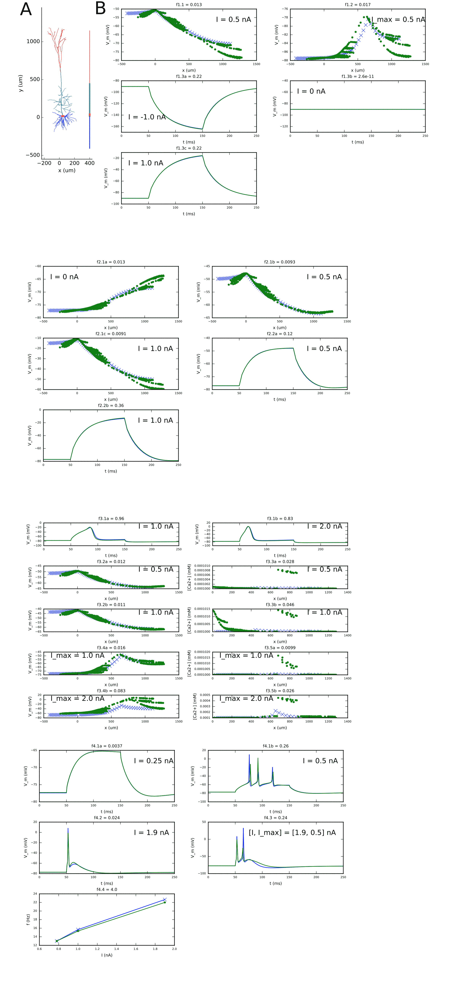

Python and NEURON scripts for optimizing parameters of a reduced-morphology layer V pyramidal cell.
Tuomo Mäki-Marttunen, 2015-2017
CC BY 3.0
Neuron model fitting scripts based on scripts by A. Bahl (Bahl et al. 2012, Automated optimization of a reduced layer 5 pyramidal
cell model based on experimental data)
HOC-commands of scripts for generating the target data based on scripts by E. Hay (Hay et al. 2011, Models of Neocortical Layer
5b Pyramidal Cells Capturing a Wide Range of
Dendritic and Perisomatic Active Properties,
PLoS Comput Biol 7:e1002107)
######################################################################################
######### Fitting ion-channel conductances and other membrane parameters #############
######################################################################################
Files included:
morphologies/cell1.asc #Morphology of the reconstructed-morphology model. From http://modeldb.yale.edu/139653
models/L5PCbiophys3.hoc #Biophysics of the reconstructed-morphology model. From http://modeldb.yale.edu/139653
models/L5PCtemplate.hoc #Template for the reconstructed-morphology model. From http://modeldb.yale.edu/139653
models/fourcompartment.hoc #HOC-file for simulations with reduced-morphology model
CaDynamics_E2.mod #mod-file for Ca2+ dynamics. From http://modeldb.yale.edu/139653
Ca_HVA.mod #mod-file for HVA Ca2+ currents. From http://modeldb.yale.edu/139653
Ca_LVAst.mod #mod-file for LVA Ca2+ currents. From http://modeldb.yale.edu/139653
Ih.mod #mod-file for HCN currents. From http://modeldb.yale.edu/139653
Im.mod #mod-file for Muscarinic K+ currents. From http://modeldb.yale.edu/139653
K_Pst.mod #mod-file for Persistent K+ currents. From http://modeldb.yale.edu/139653
K_Tst.mod #mod-file for Transient K+ currents. From http://modeldb.yale.edu/139653
NaTa_t.mod #mod-file for Transient Na+ currents. From http://modeldb.yale.edu/139653
Nap_Et2.mod #mod-file for Persisent Na+ currents. From http://modeldb.yale.edu/139653
SK_E2.mod #mod-file for SK currents. From http://modeldb.yale.edu/139653
SKv3_1.mod #mod-file for Kv3.1 currents. From http://modeldb.yale.edu/139653
epsp.mod #mod-file for current-based EPSP input. From http://modeldb.yale.edu/139653
drawfits_withmids_combfs.py #Python file for drawing the fits for the four steps.
drawfits_withmids_combfs_nseg5.py #Python file for drawing the fits for the four steps using reduced numbers of segments
# (used for comparison between CPU times).
drawmorphs.py #Python file for drawing the morphologies of both full.morphology and reduced-morphology model
drawobjective_evolution.py #Python file for drawing the evolution of error functions
emoo.py #Python file for NSGA-II optimization algorithm. From http://projects.g-node.org/emoo/
# (slight modifications made).
mytools.py #Python file for general utilities
originalrun.sav #Data for comparing the reduced-model responses against the full-morphology model responses
pars_withmids_combfs_1a.sav #Parameter set after first step fit (with ITER=0)
pars_withmids_combfs_1a_0a.sav #Parameter set after second step fit (with ITER=2)
pars_withmids_combfs_1a_0a_5a.sav #Parameter set after third step fit (wiht ITER=5)
pars_withmids_combfs_final.sav #Final parameter set from the four fitting steps
pars_withmids_combfs_fixed_final.sav #Final parameter set from the four fitting steps when an alternative scheme for the first step
# (where gpas was externally set to a fixed value) was used
snmf_protocols.py #Python file with protocols for the four fitting steps
snmf_target.py #Python file for generating the target data for the four fitting steps
snmf_withmids_combfs.py #Python file for performing the four fitting steps
To perform the model fitting, first run the following commands in the main directory:
nrnivmodl # Compile the NEURON mechanisms
python snmf_target.py # Generate the target data
Next, depending how extensive model fitting you want to perform and how many CPUs you can/want to use, you can do one of the following:
1) Single-CPU run with minimal number of fittings (First fitting takes approx 4 hours, second and third 10-20 hours,
and last one several days to finish. Note: Running the fitting tasks
may produce different results than the pre-calculated parameters in
"pars_withmids_combfs_*.sav", and as the differences cumulate across
the steps, the results of the last step may be very different from
the ones shown in the paper. To get fitting results that are similar
to those in the paper, only run the fourth step)
python snmf_withmids_combfs.py 0 #Run the first step optimization (morphology, passive membrane parameters)
# rewrite pars_withmids_combfs_?a.sav
python snmf_withmids_combfs.py 2 #Run the second step optimization (Ih conductances, redo passive conductances)
# load pars_withmids_combfs_1a.sav, rewrite pars_withmids_combfs_1a_?a.sav
python snmf_withmids_combfs.py 5 #Run the third step optimization (Ca and SK conductances, Ca dynamics),
# load pars_withmids_combfs_1a_0a.sav, rewrite pars_withmids_combfs_1a_0a_?a.sav
python snmf_withmids_combfs.py 59 #Run the fourth step optimization (Na and K conductances),
# load pars_withmids_combfs_1a_0a_5a.sav, rewrite pars_withmids_combfs_1a_0a_5a_?a.sav
2) Multi-CPU (e.g. 16 processors) run with minimal number of fittings (note that MPI must have been allowed when installing NEURON)
mpirun -np 16 nrniv -python -mpi snmf_withmids_combfs.py 0 # Run the first step optimization,
# rewrite pars_withmids_combfs_?a.sav
mpirun -np 16 nrniv -python -mpi snmf_withmids_combfs.py 2 # Run the second step optimization,
# load pars_withmids_combfs_1a.sav, rewrite pars_withmids_combfs_1a_?a.sav
mpirun -np 16 nrniv -python -mpi snmf_withmids_combfs.py 5 # Run the third step optimization,
# load pars_withmids_combfs_1a_0a.sav, rewrite pars_withmids_combfs_1a_0a_?a.sav
mpirun -np 16 nrniv -python -mpi snmf_withmids_combfs.py 59 # Run the fourth step optimization,
# load pars_withmids_combfs_1a_0a_5a.sav, rewrite pars_withmids_combfs_1a_0a_5a_?a.sav
# This may still take 10-20 hours to finish
3) Multi-CPU (e.g. 64 processors) run with thorough fitting
for i in `seq 0 66`;
do
mpirun -np 64 nrniv -python -mpi snmf_withmids_combfs.py $i
done
To test the performance of the reduced model with the final parameter set, run the following
(replace "pars_withmids_combfs_final.sav" by the parameter set file name you want to monitor):
python drawmorphs.py pars_withmids_combfs_final #Illustrate the difference between reconstructed
# and reduced morphology (with fitted segment lengths)
python drawfits_withmids_combfs.py pars_withmids_combfs_final #Illustrate the fit to the data and calculate the
# objective functions for all four steps
These scripts reproduce Figures 1-4 in Mäki-Marttunen T, Halnes G, Devor A, Metzner C, Dale AM, Andreassen OA,
Einevoll GT (2017): "A stepwise neuron model fitting procedure designed for recordings with high spatial
resolution, application to layer V pyramidal cells".

If you have run the fittings (and thus obtain the _tmpX.sav files that contain the objective function values for each generation)
you can draw the evolution of objective functions (Figure 5 in Mäki-Marttunen et al. 2017) as follows:
drawobjective_evolution.py $i
where $i is the same ITER number as given for the corresponding fitting task in snmf_withmids_combfs.py.
To test the computational efficiency of the reduced model with the final parameter set, run the following:
sh testtime.sh > mylog.txt # Run the original and reduced model for five times (i.e. five repetitions of each objective function) and
cat mylog.txt | grep seconds # print the simulation time for both